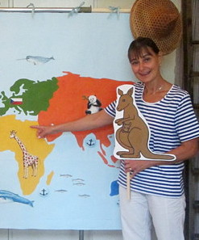
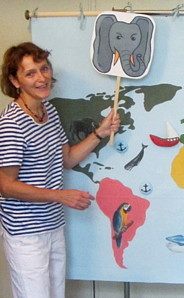

O NÁS
DIVADLO A ŠMYTEC! je pražské hudební divadélko pro děti. Naší snahou je pobavit, ale i aktivně zapojit děti do hry.
Malé autorské divadlo s loutkami, hudbou a přímým kontaktem s dětmi bylo vždy naším snem. Na podzim roku 2013
jsme se rozhodly to zkusit, a napsaly a zrealizovaly jsme první představení o kouzelných housličkách.
V současné době hrajeme osm pohádek a máme odehráno přes 400 představení.
Soubor tvoří:
Marcela Peňázová
absolventka hereckého oddělení Konzervatoře v Brně.
V současné době se zabývá dabingem a zájezdovým divadlem pro děti. V minulosti byla v angažmá postupně v Horáckém divadle Jihlava, Státním divadle Ostrava, Národním divadle v Brně a v Městských divadlech pražských.


Zuzana Grosmanová
absolventka oddělení smyčcových nástrojů, obor housle Pražské konzervatoře.
V současné době hraje v Orchestru Sester Havelkových. Doprovází také Světlanu Nálepkovou, Igora Šebo a šansonierku Zlatku Bartoškovou. V minulosti hrála v Originálním pražském synkopickém orchestru, v souboru Musica antiqua Praha a později v Melody Makers Ondřeje Havelky.
V případě zájmu nás kontaktujte na telefonním čísle 737 973 945 (Marcela Peňázová) nebo pošlete e-mail na adresu divadloasmytec@seznam.cz. Představení trvá přibližně 40 minut. Cena představení je 50 Kč/dítě (při menším počtu dětí minimum 3 000 Kč), případně je možné se o ceně dohodnout po telefonu nebo osobně.